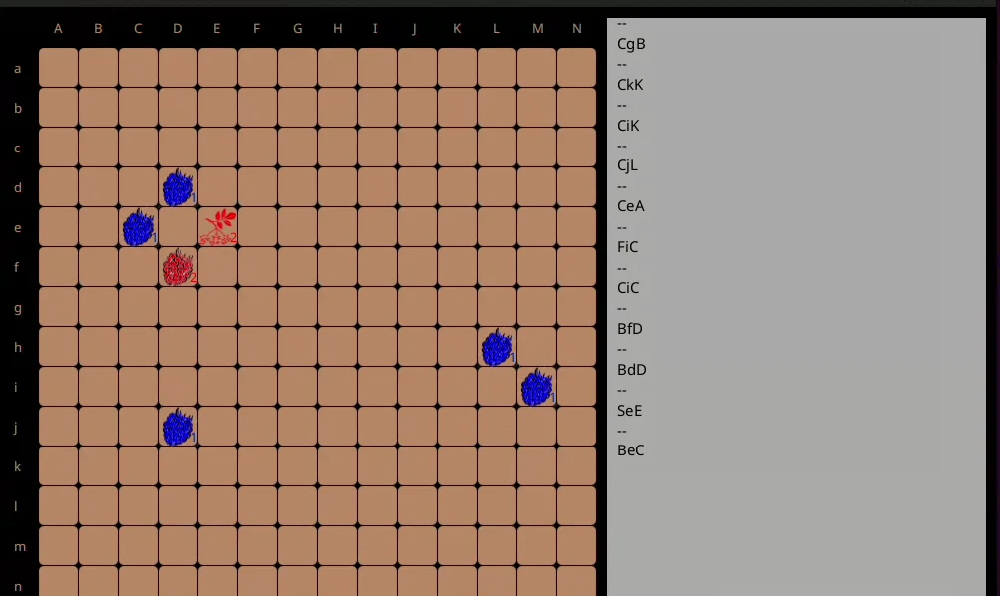

FORMATION
2025 — 2028
BUT Informatique
IUT de Bordeaux · Gradignan
2025 — 2027
DU Intelligence Artificielle
Machine Learning, Deep Learning et vision par ordinateur
2024 · Mention Bien
Baccalauréat Sciences Mathématiques
Lycée Hexagone · Fès
ILYAS EL QASRI · BUT 2 INFORMATIQUE + DU IA
Étudiant en deuxième année de BUT Informatique et en DU Intelligence Artificielle à l’IUT de Bordeaux.
Je conçois des applications et j’explore les données, du logiciel à la vision par ordinateur.
Stage de 8 à 10 semaines · à partir du 18 janvier 2027

Java / Python
C# / SQL / Web
01 / EXPLORER
Des projets pour apprendre à développer,
raisonner et travailler ensemble.
Glissez, utilisez la molette ou les flèches du clavier. Entrée ouvre la fiche.
02 / METTRE EN PRATIQUE
Chaque projet relie les apprentissages du BUT à des choix concrets : une structure de données, une interface, une méthode de test.
Concevoir et développer des applications, de la logique métier à l’interface.
Comparer des solutions, raisonner sur la complexité et mesurer les coûts.
Configurer des systèmes communicants et déployer des services Linux.
Modéliser, importer et vérifier les données avant leur exploitation.
Analyser le besoin, planifier, suivre les écarts et documenter les décisions.
Développer en équipe, partager les responsabilités et communiquer les résultats.
OUTILS PRATIQUÉS
03 / LE PARCOURS
Je suis Ilyas El Qasri, étudiant en deuxième année de BUT Informatique et en DU Intelligence Artificielle à l’IUT de Bordeaux.
J’aime passer de la compréhension d’un besoin à une solution testable : applications, bases de données, analyse des données et vision par ordinateur. En parallèle de mes études, l’encadrement d’une équipe U14 m’a appris à organiser, expliquer et faire progresser un collectif.
FORMATION
IUT de Bordeaux · Gradignan
Machine Learning, Deep Learning et vision par ordinateur
Lycée Hexagone · Fès
EXPÉRIENCE
Cité des Sports Adarissa · Fès
Préparer et animer les séances, accompagner l’équipe en match et coordonner l’organisation avec le club et les parents.
LANGUES
Courant
Niveau B2 · documentation technique et contexte académique
DISPONIBLE À PARTIR DU 18 JANVIER 2027
Stage de 8 à 10 semaines en développement logiciel, web, données ou intelligence artificielle.